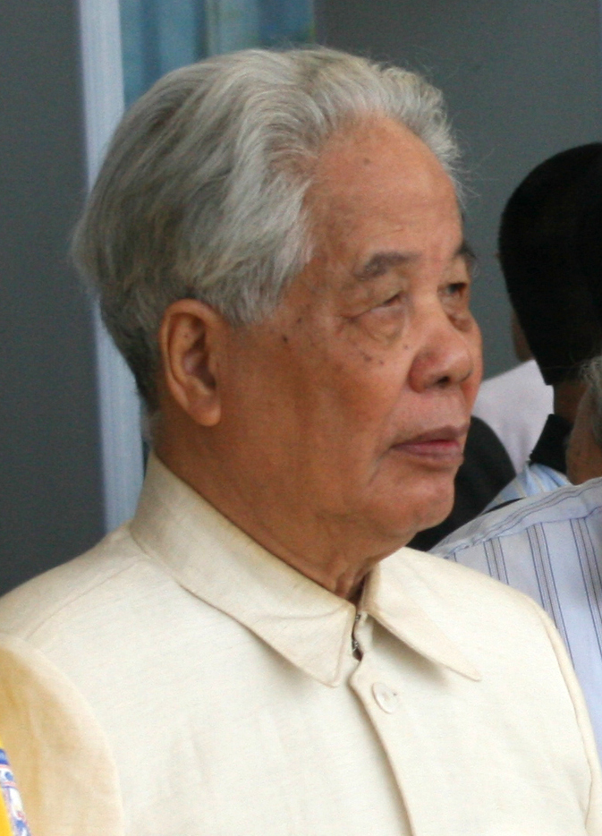

ĐƯỜNG LỐI CÁCH MẠNG CỦA ĐẢNG CỘNG SẢN VIỆT NAM
Tiếp tục công cuộc Đổi mới,
đẩy mạnh Công nghiệp hóa, Hiện đại hóa
và Hội nhập quốc tế
(Từ năm 1986 đến nay)
NỘI DUNG TRÌNH BÀY
Đại hội VIII (6/1996)
Bước chuyển sang thời kỳ đẩy mạnh CNH, HĐH
Đại hội IX (4/2001)
Tiếp tục thực hiện CNH, HĐH đất nước
Tổng kết & Bài học
Chặng đường lịch sử và giá trị thời đại
Đại hội VIII (6/1996)
Bước chuyển sang thời kỳ đẩy mạnh công nghiệp hóa, hiện đại hóa
1.1 · THÔNG TIN ĐẠI HỘI, BỐI CẢNH & QUYẾT ĐỊNH CHIẾN LƯỢC
Đại hội đại biểu toàn quốc lần thứ VIII
Họp tại Hà Nội từ 28/6 – 1/7/1996. Tham dự có 1.198 đại biểu, thay mặt hơn 2,1 triệu đảng viên cả nước. Đại hội thông qua các văn kiện chính trị quan trọng, bầu đồng chí Đỗ Mười tiếp tục làm Tổng Bí thư.
Đánh giá 10 năm Đổi mới (từ Đại hội VI – 1986)
Đất nước thu được những thành tựu to lớn, có ý nghĩa rất quan trọng: đã ra khỏi khủng hoảng kinh tế – xã hội, nhiệm vụ chuẩn bị tiền đề công nghiệp hóa của chặng đường đầu thời kỳ quá độ đã cơ bản hoàn thành. Tuy nhiên một số mặt còn chưa vững chắc.
Quyết định chiến lược: chuyển sang thời kỳ mới
Khẳng định con đường đi lên chủ nghĩa xã hội ngày càng được xác định rõ hơn — cho phép chuyển từ chuẩn bị tiền đề công nghiệp hóa (1986 – 1996) sang đẩy mạnh công nghiệp hóa, hiện đại hóa đất nước (từ 1996).

Tổng Bí thư (1991 – 1997)
1.2 · SÁU BÀI HỌC CHỦ YẾU QUA 10 NĂM ĐỔI MỚI
Giữ vững mục tiêu độc lập dân tộc và chủ nghĩa xã hội trong quá trình đổi mới; nắm vững hai nhiệm vụ chiến lược xây dựng và bảo vệ Tổ quốc, kiên trì chủ nghĩa Mác – Lênin và tư tưởng Hồ Chí Minh.
Kết hợp chặt chẽ ngay từ đầu đổi mới kinh tế với đổi mới chính trị, lấy đổi mới kinh tế làm trọng tâm, đồng thời từng bước đổi mới chính trị.
Xây dựng nền kinh tế hàng hóa nhiều thành phần, vận hành theo cơ chế thị trường, đi đôi với tăng cường vai trò quản lý của Nhà nước theo định hướng xã hội chủ nghĩa.
Mở rộng và tăng cường khối đại đoàn kết toàn dân, phát huy sức mạnh của cả dân tộc.
Mở rộng hợp tác quốc tế, tranh thủ sự đồng tình, ủng hộ và giúp đỡ của nhân dân thế giới, kết hợp sức mạnh của dân tộc với sức mạnh thời đại.
Tăng cường vai trò lãnh đạo của Đảng, coi xây dựng Đảng là nhiệm vụ then chốt.
1.2 · SÁU QUAN ĐIỂM CỦA ĐẢNG VỀ CNH, HĐH
Giữ vững độc lập, tự chủ, đi đôi với mở rộng hợp tác quốc tế, đa phương hóa, đa dạng hóa quan hệ đối ngoại. Dựa vào nguồn lực trong nước là chính, đi đôi với tranh thủ tối đa nguồn lực bên ngoài.
CNH, HĐH là sự nghiệp của toàn dân, của mọi thành phần kinh tế, trong đó kinh tế nhà nước giữ vai trò chủ đạo.
Lấy việc phát huy nguồn lực con người làm yếu tố cơ bản cho sự phát triển nhanh và bền vững.
Khoa học và công nghệ là động lực của CNH, HĐH; kết hợp công nghệ truyền thống với công nghệ hiện đại, tranh thủ đi nhanh vào hiện đại ở những khâu quyết định.
Lấy hiệu quả kinh tế – xã hội làm tiêu chuẩn cơ bản để xác định phương án phát triển, lựa chọn dự án đầu tư và công nghệ.
Kết hợp kinh tế với quốc phòng và an ninh.
1.3 · CỤ THỂ HÓA ĐƯỜNG LỐI QUA CÁC HỘI NGHỊ TRUNG ƯƠNG KHÓA VIII (1996 – 2000)
Ban Chấp hành Trung ương đã họp nhiều lần, chỉ đạo thực hiện những nhiệm vụ trọng tâm trên 5 lĩnh vực:
Về Kinh tế
Phát triển kinh tế là nhiệm vụ trọng tâm; phát huy tối đa nội lực, nâng cao hiệu quả hợp tác quốc tế, ra sức cần kiệm, nâng cao hiệu quả sử dụng vốn, khắc phục xu hướng chạy theo "xã hội tiêu dùng".
Chịu tác động nghiêm trọng từ khủng hoảng tài chính – tiền tệ khu vực (từ 7/1997).
1.3 · VỀ GIÁO DỤC & KHOA HỌC — DÂN CHỦ
🎓 Giáo dục & Khoa học
Hội nghị TW 2 khóa VIII (12/1996) ban hành Nghị quyết số 02-NQ/HNTW về định hướng chiến lược phát triển giáo dục – đào tạo và khoa học – công nghệ. Xác định: giáo dục – đào tạo cùng với khoa học – công nghệ là quốc sách hàng đầu.
🗳️ Dân chủ
Hội nghị TW 3 khóa VIII (6/1997) ra Nghị quyết số 03-NQ/HNTW về phát huy quyền làm chủ của nhân dân, tiếp tục xây dựng Nhà nước Cộng hòa xã hội chủ nghĩa Việt Nam. Bộ Chính trị ban hành Chỉ thị số 30-CT/TW (18/2/1998) về xây dựng và thực hiện Quy chế dân chủ ở cơ sở.
1.3 · VỀ VĂN HÓA — "TUYÊN NGÔN VĂN HÓA"
Nghị quyết số 03-NQ/TW
Về xây dựng và phát triển nền văn hóa Việt Nam tiên tiến, đậm đà bản sắc dân tộc.
Văn hóa là nền tảng tinh thần của xã hội, vừa là mục tiêu vừa là động lực thúc đẩy sự phát triển kinh tế – xã hội.
Nghị quyết này được coi như tuyên ngôn văn hóa của Đảng trong thời kỳ CNH, HĐH.
1.3 · VỀ XÂY DỰNG ĐẢNG & BỘ MÁY NHÀ NƯỚC
Bầu đồng chí Lê Khả Phiêu làm Tổng Bí thư.
Nghị quyết số 10-NQ/TW (2/2/1999): một số vấn đề cơ bản và cấp bách trong công tác xây dựng Đảng, đẩy mạnh cuộc vận động xây dựng, chỉnh đốn Đảng. Yêu cầu kiên định những quan điểm có tính nguyên tắc như độc lập dân tộc gắn liền với chủ nghĩa xã hội, chủ nghĩa Mác – Lênin và tư tưởng Hồ Chí Minh.
Xác định rõ hơn chức năng, nhiệm vụ và tổ chức các ban của Đảng ở các cấp; cải tiến cách làm việc của các cơ quan của Quốc hội, của Chính phủ; sắp xếp tổ chức của hai ngành kiểm sát và tòa án, xây dựng quy chế làm việc.
Đại hội IX (4/2001)
Tiếp tục thực hiện công nghiệp hóa, hiện đại hóa đất nước
2.1 · BỐI CẢNH, THÔNG TIN ĐẠI HỘI & ĐÁNH GIÁ THÁCH THỨC
Đại hội đại biểu toàn quốc lần thứ IX
BCH Trung ương khóa IX: 150 ủy viên · Bộ Chính trị: 15 đồng chí · Ban Bí thư: 9 đồng chí. Đại hội mở đầu thế kỷ XXI — thời điểm cách mạng KH-CN, kinh tế tri thức, toàn cầu hóa diễn ra mạnh mẽ.
Thành tựu
Sau 15 năm đổi mới, Việt Nam đạt nhiều thành tựu quan trọng, tạo thế và lực mới.
Hạn chế
Kinh tế phát triển chưa vững chắc, hiệu quả và sức cạnh tranh thấp. Chỉ tiêu tăng trưởng 9–10% (Đại hội VIII đề ra) không đạt.
Các nguy cơ mà Hội nghị đại biểu toàn quốc giữa nhiệm kỳ (khóa VII – 1994) nêu ra vẫn là những thách thức lớn của cách mạng nước ta.
2.2 · MỤC TIÊU CHIẾN LƯỢC (2001 – 2010) & KẾ THỪA BÀI HỌC LỊCH SỬ
Chiến lược phát triển kinh tế – xã hội 10 năm
Đưa nước ta ra khỏi tình trạng kém phát triển; tạo nền tảng để đến năm 2020 nước ta cơ bản trở thành một nước công nghiệp theo hướng hiện đại; đưa GDP năm 2010 lên gấp đôi so với năm 2000.
Chiến lược ổn định và phát triển KT-XH đến năm 2000 đã đưa GDP năm 2000 tăng hơn gấp đôi so với năm 1990.
Những bài học đổi mới từ Đại hội VI, VII, VIII vẫn còn giá trị lớn, nhất là:
Trong quá trình đổi mới phải kiên trì mục tiêu độc lập dân tộc và chủ nghĩa xã hội trên nền tảng chủ nghĩa Mác – Lênin và tư tưởng Hồ Chí Minh.
Đổi mới phải dựa vào nhân dân, vì lợi ích của nhân dân, phù hợp với thực tiễn, luôn luôn sáng tạo.
Đổi mới phải kết hợp sức mạnh dân tộc với sức mạnh thời đại.
Đường lối đúng đắn của Đảng là nhân tố quyết định thành công của sự nghiệp đổi mới.
2.3 · NHỮNG BƯỚC ĐỘT PHÁ VỀ LÝ LUẬN NỀN TẢNG (1/2)
Nền tảng tư tưởng dẫn đường
Đảng lấy chủ nghĩa Mác – Lênin và tư tưởng Hồ Chí Minh làm nền tảng tư tưởng, kim chỉ nam cho hành động. Tư tưởng Hồ Chí Minh là một hệ thống quan điểm toàn diện và sâu sắc về những vấn đề cơ bản của cách mạng Việt Nam, là tài sản tinh thần to lớn của Đảng và dân tộc ta.
Con đường phát triển lên chủ nghĩa xã hội
Bỏ qua chế độ tư bản chủ nghĩa — tức là bỏ qua việc xác lập vị trí thống trị của quan hệ sản xuất và kiến trúc thượng tầng TBCN — nhưng tiếp thu, kế thừa những thành tựu mà nhân loại đã đạt được dưới chế độ tư bản chủ nghĩa, đặc biệt về khoa học và công nghệ, để phát triển nhanh lực lượng sản xuất, xây dựng nền kinh tế hiện đại.
Xác định mô hình kinh tế
Thực hiện nhất quán, lâu dài nền kinh tế thị trường định hướng xã hội chủ nghĩa — coi đây là mô hình kinh tế tổng quát của nước ta trong thời kỳ quá độ đi lên CNXH: nền kinh tế hàng hóa nhiều thành phần vận động theo cơ chế thị trường, có sự quản lý của Nhà nước theo định hướng xã hội chủ nghĩa.
2.3 · NHỮNG BƯỚC ĐỘT PHÁ VỀ LÝ LUẬN NỀN TẢNG (2/2)
Xác định động lực phát triển
Động lực chủ yếu là đại đoàn kết toàn dân trên cơ sở liên minh công nhân – nông dân – trí thức do Đảng lãnh đạo, kết hợp hài hòa lợi ích cá nhân, tập thể và xã hội; phát huy mọi tiềm năng và nguồn lực của các thành phần kinh tế, của toàn xã hội.
Văn hóa & Đối ngoại
Văn hóa: Xây dựng nền văn hóa Việt Nam tiên tiến, đậm đà bản sắc dân tộc — nền tảng tinh thần, vừa là mục tiêu, vừa là động lực phát triển KT-XH. Đối ngoại: Độc lập tự chủ, rộng mở, đa phương hóa, đa dạng hóa. Việt Nam sẵn sàng là bạn, là đối tác tin cậy của các nước trong cộng đồng quốc tế.
Tầm quan trọng
Đại hội lần thứ IX tiếp tục đẩy mạnh công cuộc đổi mới, đánh dấu bước trưởng thành trong nhận thức, phát triển và cụ thể hóa Cương lĩnh chính trị năm 1991 (Đại hội VII) trong những năm đầu thế kỷ XXI.
2.4 · CỤ THỂ HÓA ĐƯỜNG LỐI QUA CÁC HỘI NGHỊ TRUNG ƯƠNG KHÓA IX
Các hội nghị Trung ương khóa IX chỉ đạo đổi mới toàn diện trên 5 nhóm nhiệm vụ trọng tâm:
Kinh tế tư nhân & kinh tế tập thể
Thảo luận, thống nhất nhận thức coi kinh tế tư nhân là bộ phận cấu thành quan trọng của nền kinh tế quốc dân. Phát triển kinh tế tư nhân là vấn đề chiến lược lâu dài trong phát triển nền kinh tế nhiều thành phần định hướng xã hội chủ nghĩa. Đồng thời, thống nhất nhận thức về sự cần thiết phát triển kinh tế tập thể, xác lập môi trường thể chế và tâm lý xã hội thuận lợi cho kinh tế tập thể phát triển.
Chính sách, pháp luật về đất đai
Thống nhất nhận thức coi đất đai là tài nguyên quốc gia vô cùng quý giá, là tư liệu sản xuất đặc biệt, là nguồn nội lực và nguồn vốn to lớn của đất nước; ban hành nghị quyết về tiếp tục đổi mới chính sách, pháp luật về đất đai trong thời kỳ đẩy mạnh CNH, HĐH. Nhà nước giao đất, cho thuê đất cho các tổ chức, hộ gia đình và cá nhân sử dụng ổn định lâu dài hoặc có thời hạn theo pháp luật.
2.4 · VỀ CÔNG TÁC TƯ TƯỞNG, LÝ LUẬN
Đề ra những nhiệm vụ chủ yếu của công tác tư tưởng, lý luận trong tình hình mới.
Chỉ thị số 23-CT/TW
Về đẩy mạnh nghiên cứu, tuyên truyền, giáo dục tư tưởng Hồ Chí Minh trong giai đoạn mới.
2.4 · VỀ ĐẠI ĐOÀN KẾT, DÂN TỘC VÀ TÔN GIÁO
Hội nghị Trung ương 7 khóa IX (3/2003) ban hành 3 nghị quyết quan trọng:
NQ 23-NQ/TW — Phát huy sức mạnh đại đoàn kết toàn dân tộc vì "Dân giàu, nước mạnh, xã hội công bằng, dân chủ, văn minh".
NQ 24-NQ/TW — Về công tác dân tộc.
NQ 25-NQ/TW — Về công tác tôn giáo.
Đại đoàn kết toàn dân tộc là đường lối chiến lược của cách mạng Việt Nam, là nguồn sức mạnh, động lực chủ yếu và nhân tố quyết định thắng lợi bền vững của sự nghiệp xây dựng và bảo vệ Tổ quốc.
2.4 · CÔNG TÁC ĐỐI VỚI NGƯỜI VIỆT NAM Ở NƯỚC NGOÀI & QUỐC PHÒNG
🌏 Kiều bào
Nghị quyết số 36-NQ/TW (Bộ Chính trị khóa IX, 26/3/2004) chủ trương coi người Việt Nam ở nước ngoài là bộ phận không tách rời, là nguồn lực của cộng đồng dân tộc Việt Nam.
🛡️ Quốc phòng
Hội nghị TW 8 khóa IX (7/2003) ban hành Chiến lược bảo vệ Tổ quốc trong tình hình mới, đưa ra các nhiệm vụ cơ bản và giải pháp chủ yếu bảo vệ Tổ quốc trong tình hình mới.
Tổng kết chặng đường lịch sử
Đại hội VIII & Đại hội IX — và những bài học kinh nghiệm
01 · KHẲNG ĐỊNH BƯỚC CHUYỂN MÌNH MANG TÍNH LỊCH SỬ
Đánh dấu cột mốc vĩ đại khi Việt Nam chính thức tuyên bố thoát khỏi khủng hoảng kinh tế – xã hội kéo dài.
02 · SỰ HOÀN THIỆN VÀ ĐỘT PHÁ VỀ TƯ DUY LÝ LUẬN
Hai kỳ Đại hội đánh dấu sự trưởng thành vượt bậc về lý luận của Đảng:
Nền tảng tư tưởng
Chính thức xác định chủ nghĩa Mác – Lênin và tư tưởng Hồ Chí Minh là nền tảng tư tưởng.
Mô hình kinh tế
Xác lập "Kinh tế thị trường định hướng xã hội chủ nghĩa" — chìa khóa vàng phát triển nhanh, không chệch hướng XHCN.
03 · ĐẶT CON NGƯỜI VÀ ĐẠI ĐOÀN KẾT TOÀN DÂN TỘC LÀM TRUNG TÂM
Con người vừa là mục tiêu, vừa là động lực của sự phát triển.
Nền tảng tinh thần vững chắc để vượt qua khủng hoảng tài chính châu Á (1997) và âm mưu chống phá của thế lực thù địch.
04 · GIÁ TRỊ THỜI ĐẠI VÀ TẦM NHÌN VƯƠN TỚI TƯƠNG LAI
Những quyết sách chiến lược giai đoạn 1996–2005 đã tạo ra thế và lực mới, đặt nền móng vững chắc về cơ sở hạ tầng, kinh tế, thể chế để Việt Nam bước vào thế kỷ XXI vươn mình hội nhập sâu rộng (gia nhập WTO, ký kết các FTA thế hệ mới).
Đồng thời, bài học về kết hợp sức mạnh dân tộc với sức mạnh thời đại và coi xây dựng Đảng là nhiệm vụ then chốt vẫn còn nguyên giá trị, soi đường cho công cuộc xây dựng và bảo vệ Tổ quốc hôm nay, hướng tới khát vọng Việt Nam hùng cường vào năm 2045.
Kết luận chung
Sự lãnh đạo đúng đắn, sáng tạo, nhạy bén và bản lĩnh của Đảng Cộng sản Việt Nam qua các kỳ Đại hội VIII và IX chính là nhân tố quyết định đưa công cuộc Đổi mới đi đến những thắng lợi to lớn, có ý nghĩa lịch sử — tạo tiền đề cho sự phát triển rực rỡ của đất nước ngày nay.
Cảm ơn đã theo dõi